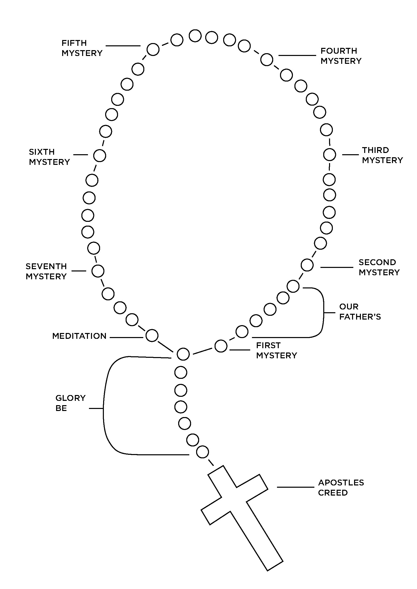
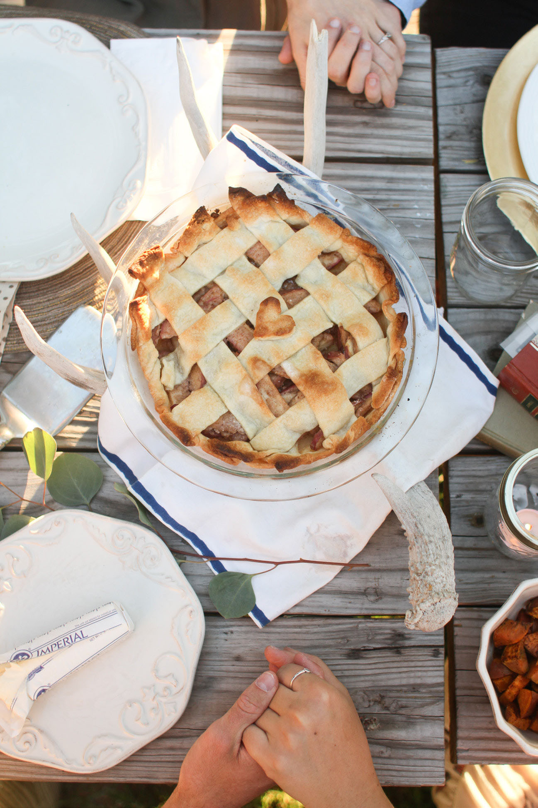
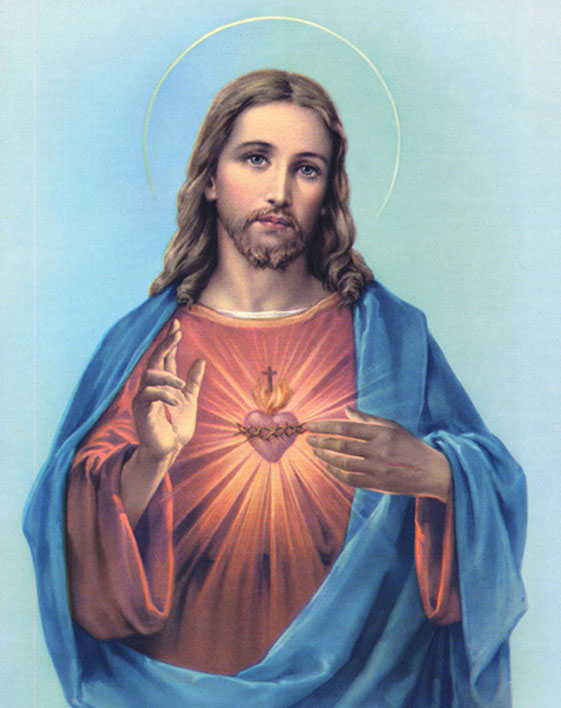
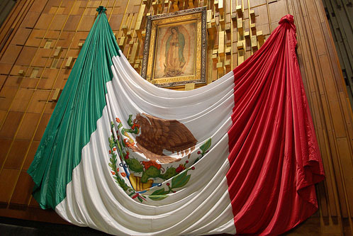
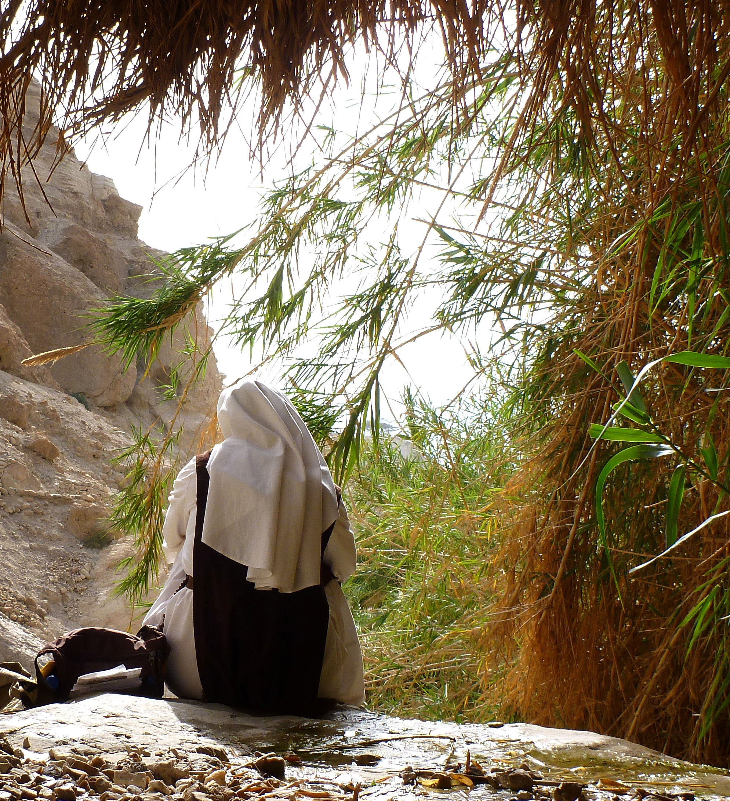
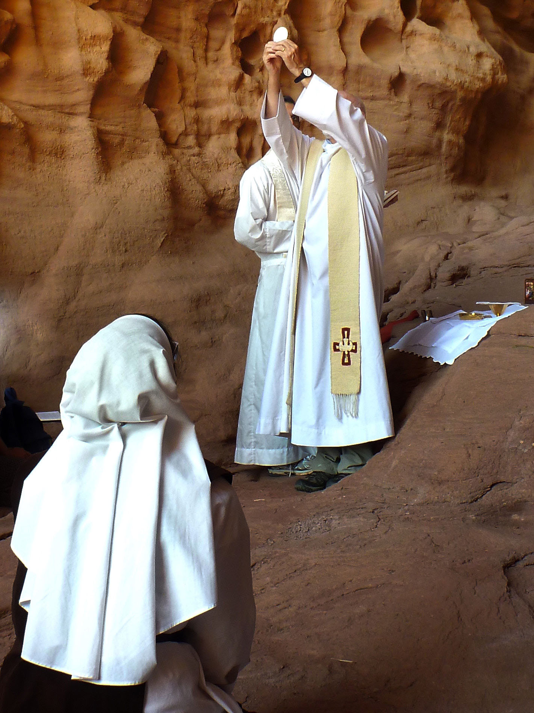
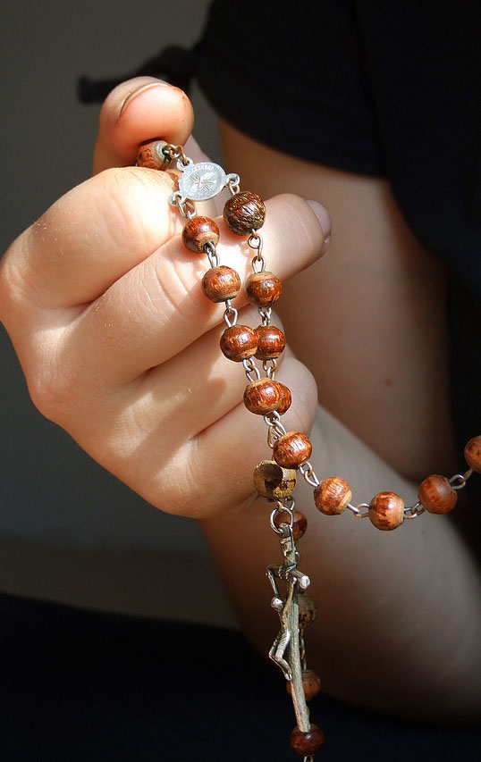
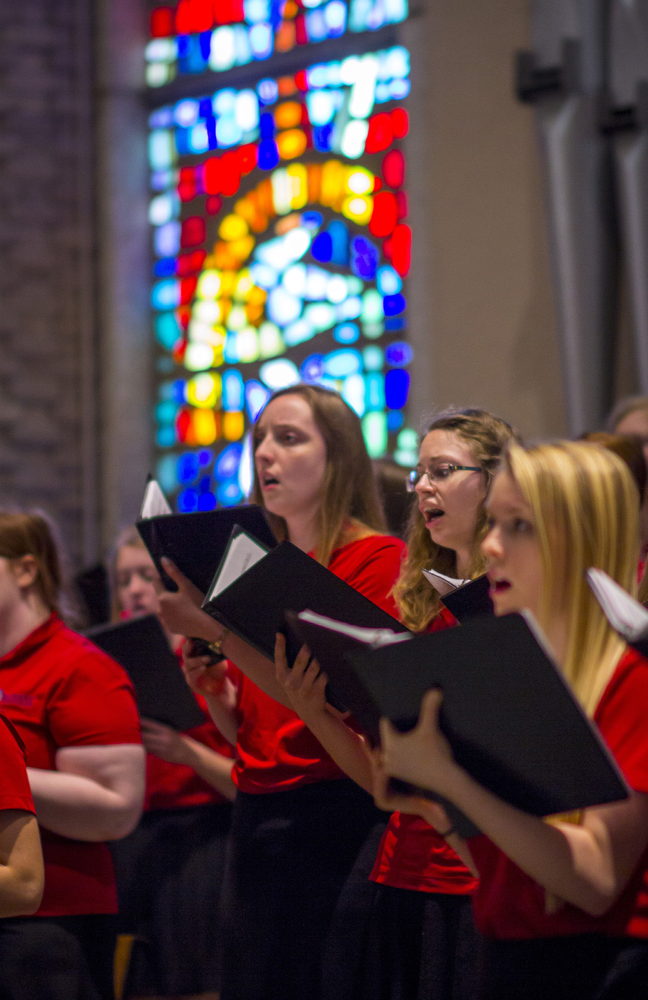

-
ROSARY
IN THE NAME of the Father, and of the Son, and of the Holy Spirit. Amen.
I BELIEVE IN GOD, the Father almighty, Creator of Heaven and earth. And in Jesus Christ, His only Son, our Lord, Who was conceived by the Holy Spirit, born of the Virgin Mary, suffered under Pontius Pilate; was crucified, died, and was buried. He descended into Hell. The third day He rose again from the dead. He ascended into Heaven, and sits at the right hand of God, the Father almighty. He shall come again to judge the living and the dead. I believe in the Holy Spirit, the holy Catholic Church, the communion of saints, the forgiveness of sins, the resurrection of the body, and life everlasting. Amen.
OUR FATHER, Who art in Heaven, hallowed be Thy Name. Thy kingdom come, Thy will be done on earth as it is in Heaven. Give us this day our daily bread, and forgive us our trespasses, as we forgive those who trespass against us. And lead us not into temptation, but deliver us from evil. Amen.
HAIL MARY, full of grace, the Lord is with thee. Blessed art thou among women, and blessed is the fruit of thy womb, Jesus. Holy Mary, Mother of God, pray for us sinners, now and at the hour of our death. Amen.
GLORY BE to the Father, and to the Son, and to the Holy Spirit. As it was in the beginning is now, and ever shall be, world without end. Amen.
O MY JESUS, forgive us our sins, save us from the fires of Hell; lead all souls to Heaven, especially those in most need of Thy mercy. Amen.
HAIL HOLY QUEEN, mother of mercy; our life, our sweetness, and our hope. To thee do we cry, poor banished children of Eve. To thee do we send up our sighs, mourning and weeping in this vale of tears. Turn, then, most gracious advocate, thine eyes of mercy toward us. And after this, our exile, show unto us the blessed fruit of thy womb, Jesus. O clement, O loving, O sweet Virgin Mary. Pray for us, O holy Mother of God, that we may be made worthy of the promises of Christ. Amen.
O GOD, WHOSE only-begotten Son by His life, death and resurrection, has purchased for us the rewards of eternal life; grant, we beseech Thee, that by meditating upon these mysteries of the Most Holy Rosary of the Blessed Virgin Mary, we may imitate what they contain and obtain what they promise, through the same Christ our Lord. Amen.
ANNOUNCE each mystery by saying , “The third Joyful Mystery is the Birth of Our Lord.”
This is required only when saying the Rosary in a group.
 -
DIVINE MERCY
Oh what great graces I will grant to souls who say this chaplet; the very depths of My tender mercy are stirred for the sake of those who say the chaplet. Write down these words, My daughter: Speak to the world about My mercy; let all mankind recognize My unfathomable mercy. It is a sign for the end times; after it will come the day of justice. While there is still time, let them have recourse to the fount of My mercy; let them profit from the Blood and Water which gushed forth for them.
The Chaplet of Mercy is recited using ordinary rosary beads of five decades.
Jesus to St. Faustina: My daughter, encourage souls to say the chaplet which I have given you. It pleases Me to grant everything they ask of Me by saying the chaplet. When hardened sinners say it, I will fill their souls with peace, and the hour of their death will be a happy one. “ (Diary #1541)
“Oh what great graces I will grant to souls who say this chaplet; the very depths of My tender mercy are stirred for the sake of those who say the chaplet. Write down these words, My daughter: Speak to the world about My mercy; let all mankind recognize My unfathomable mercy. It is a sign for the end times; after it will come the day of justice. While there is still time, let them have recourse to the fount of My mercy; let them profit from the Blood and Water which gushed forth for them.” (Diary #848)
Opening Prayer: You expired, Jesus, but the source of life gushed forth for souls, and the ocean of mercy opened up for the whole world. O Fount of Life, unfathomable Divine Mercy, envelop the whole world and empty Yourself out upon us. (Diary #1319)
O Blood and Water, which gushed forth from the Heart of Jesus as a fount of Mercy for us, I trust in You. (Diary #187)
Pray one Our Father, Hail Mary, and Apostles Creed.
On the Large Beads: Eternal Father, I offer You the Body and Blood, Soul and Divinity of Your dearly beloved Son, Our Lord Jesus Christ / in atone- ment for our sins and those of the whole world.
On the Small Beads: For the sake of His sorrowful Passion / have mercy on us and the whole world.
Conclude with: Holy God, Holy Mighty One, Holy Immortal One, have mercy on us and on the whole world. (3 times)
Let us pray: Eternal God, in whom mercy is endless and the treasury of compassion inexhaustible, look kindly upon us and increase Your mercy in us; that in difficult moments we might not despair, nor become despon- dent, but with great confidence submit ourselves to Your Holy Will, which is Love and Mercy itself. Amen. (Diary #950)
Jesus, I trust in You! (3 times)
Mother of Sorrows, pray for us. St. Faustina, pray for us.
-
PREPARE FOR CONFESSION
If we say we have no sin, we deceive ourselves, and the truth is not in us.
Act of Contrition
O my God, I am heartfully sorry for having offended thee, and I detest all my sins because of Thy just punishment, but most of all because I have offended Thee my God, Who is all good and deserving of all my love. I firmly resolve, with the help of Thy grace, to sin no more, and to avoid the near occasion of sin. Amen.
Examination of Conscience:
“We have only one evil to fear and that is sin” - St. Alphonsus LiguoriDefinition of a Mortal Sin:
For a sin to be mortal, three conditions must together be met: “Mortal sin is sin whose object is grave matter, and which is also committed with full knowledge and deliberate consent”Nine ways of being an accessory to another’s sin:
- By counsel (to give advice, one’s opinion or instructions.)
- By command (to demand, to order, such as in the military.)
- By consent (to give permission, to approve, to agree to.)
- By provocation (to dare.)
- By praise or flattery (to cheer, to applaud, to commend.)
- By concealment (to hide the action, to cover-up)
- By partaking (to take part, to participate.)
- By silence (by playing dumb, by remaining quiet.)
- By defense of the ill done (to justify, to argue in favour.)
Note: To participate in the sins of another person means that one is just as guilty of the sin as the one who committed them. For example, if you encourage someone to have an abortion, you are guilty of the sin of abor- tion.
-
GRACE | DEDICATION
Grace Before Meals:
Bless Us O Lord, and these Thy gifts, which we are about to receive from Thy bounty, through Christ our Lord, Amen.Dedication of the Twelve Months of the Year:
January: The Holy Name of Jesus
February: The Passion of the Lord
March: St. Joseph
April: The Holy Eucharist
May: The Blessed Virgin Mary
June: The Sacred Heart of Jesus
July: The Most Precious Blood of Jesus
August: The Immaculate Heart of Mary
September: Our Lady of Sorrows
October: The Most Holy Rosary
November: The Holy Souls in Purgatory
December: The Divine Infancy of JesusDedication of Weekdays:
Sunday: Most Holy Trinity
Monday: Holy Souls in Purgatory
Tuesday: Guardian Angels
Wednesday: St. Joseph
Thursday: The Holy Eucharist
Friday: The Precious Blood of Jesus
Saturday: The Blessed Virgin Mary -
STATIONS OF THE CROSS
-
First Station:
Jesus is condemned to death -
Second Station:
Jesus carries His cross -
Third Station:
Jesus falls the first time -
Fourth Station:
Jesus meets his afflicted mother -
Fifth Station:
Simon of Cyrene helps Jesus to carry His cross -
Sixth Station:
Veronica wipes the face of Jesus -
Seventh Station:
Jesus falls the second time -
Eighth Station:
The daughters of Jerusalem weep over Jesus -
Ninth Station:
Jesus falls the third time -
Tenth Station:
Jesus is stripped of His garments -
Eleventh Station:
Jesus is nailed to the cross -
Twelfth Station:
Jesus dies on the cross -
Thirteenth Station:
Jesus is taken down from the cross -
Fourteenth Station:
Jesus is buried in the tomb -
Fifteenth Station:
Jesus rises from the dead on the third day
-
-
SEVEN SACRAMENTS
Baptism: (Acts 2:38—39) The forgiveness of your sins, and receive the gift of the Holy Spirit.
Confirmation: (Acts 8: 14—17) Peter and John come to Samaria to receive the Holy Spirit.
Confession: (John 20:21—23) If you forgive the sins of any, they are for given, if you retain the sins of any, they are retained.
Eucharist: (John 6: 51—56) He who eats My flesh, and drinks My blood has eternal life.
Anointing the Sick: (James 5: 13—15) Anoint them with all, and the prayer of faith will heal the sick man.
Holy Orders: (Acts 6: 6—7) “the Word of God increased; and the numbers of disciples multiplied greatly in Jerusalem, and a great number of priests were obedient to the faith”
Matrimony: (Mark 10: 6—9) A man shall leave his father and mother, to join his wife, so that two shall become one.
Seven Gifts of the Holy Spirit: Wisdom, Understanding, Counsel, Forti- tude, Knowledge, Piety, and Fear of the Lord.
Twelve Fruits of the Holy Spirit: Charity, Joy, Peace, Patience, Kindness, Goodness, Generosity, Gentleness, Faithfullness, Modesty, Self Control, and Chastity.
-
VIRTUES
The Three Theological Virtues
Faith:
We believe in God and believe all that He has said and revealed to us and that Holy Church proposes for our belief, because He is truth itself.Hope:
We desire the kingdom of heaven and eternal life as our happiness, plac- ing our trust in Christ’s promises and relying not on our own strength, but on the help of the grace of the Holy Spirit.Charity:
We love God above all things for His own sake and our neighbor as our- selves for the love of God.The Four Cardinal Virtues
Prudence:
Disposes practice reason to discern our true good in every circumstance and to choose the right means of achieving it. It is prudence that imme- diately guides the judgment of conscience.Justice:
Justice toward men disposes one to respect the rights of each to estab- lish in human relationships the harmony that promotes equity with regard to persons and to the common good.Fortitude:
Ensure firmness in difficulties and constancy in the pursuit of the good. Strengthens the resolve to resist temptations and to overcome obsta- cles in the moral life. Fortitude enables one to conquer fear, even fear of death, and to face trials of persecutions.Temperance:
Moderates the attraction of pleasures and provides balance in the use of created goods. It ensures the will’s mastery over instincts and keeps de- sires within the limits of what is honorable -
CAPITAL VICES
The Seven Capital (Deadly) Vices
Pride
An exaggerated opinion of one’s own worthAvarice
An immoderate desire for earthly goodsLust
A desire for impure pleasuresAnger
An inordinate feeling or expression of displeasureGluttony
An intemperate use of food or drinkEnvy
A jealousy over the good fortune of our neighborSloth
Laziness or carelessness in doing right in practicing virtue because of the necessary efforts attached to it -
PRAYERS
OUR FATHER
Our Father, Who art in heaven, hallowed be Thy name; Thy kingdom come; Thy will be done on earth as it is in heaven. Give us this day our daily bread; and forgive us our trespasses as we forgive those who trespasagainst us; and lead us not into temptation, but deliver us from evil. Amen.HAIL MARY
Hail Mary, full of grace. The Lord is with thee. Blessed art thou amongst women, and blessed is the fruit of thy womb, Jesus. Holy Mary, Mother of God, pray for us sinners now and at the hour of our death Amen.GLORY BE
Glory be to the Father, and to the Son, and to the Holy Spirit, as it was in the beginning, is now, and ever shall be, world without end. Amen.THE APOSTLE’S CREED
I believe in God,
the Father Almighty,
Creator of Heaven and earth;
and in Jesus Christ, His only Son, Our Lord, Who was conceived by the Holy Spirit,
born of the Virgin Mary,
suffered under Pontius Pilate,
was crucified, died, and was buried.
He descended into Hell.
The third day He arose again from the dead; He ascended into Heaven,
sitteth at the right hand of God, the Father Almighty;
from thence He shall come to judge the living and the dead.
I believe in the Holy Spirit,
the holy Catholic Church,
the communion of saints,
the forgiveness of sins,
the resurrection of the body,
and life everlastin. Amen.HAIL HOLY QUEEN
Hail, Holy Queen, Mother of mercy, our life, our sweetness and our hope. To thee do we cry, poor banished children of Eve: to thee do we send up our sighs, mourning and weeping in this valley of tears.
Turn then, most gracious Advocate, thine eyes of mercy toward us, and after this our exile, show unto us the blessed fruit of thy womb, Jesus.
O clement, O loving, O sweet Virgin Mary!
V. Pray for us, O holy Mother of God.
R. That we may be made worthy of the promises of Christ. Amen.ANIMA CHRISTI
Soul of Christ,sanctify me. Body of Christ, save me. Body of Christ, save me. Body of Christ, inebriate me. Water from the side of Christ, wash me. Passion of Christ, strengthen me. O good Jesus, hear me. Within thy wounds hide me. Suffer me not to be separated from thee. From the ma- licious enemy defend me. In the hour of my death call me and bid me to come unto thee, that with thy saints I may praise thee for ever and ever. Amen.MEMORARE
Remember, O most gracious Virgin Mary, that never was it known that any one who fled to thy protection, implored thy help or sought thy inter- cession, was left unaided. Inspired by this confidence, we fly unto thee, O Virgin of virgins my Mother; to thee do we come, before thee we stand, sinful and sorrowful; O Mother of the Word Incarnate, despise not our petitions, but in thy mercy hear and answer them. Amen.GUARDIAN ANGEL PRAYER
Angel of God, my Guardian dear, to whom God’s love commits me here, ever this day (or night) be at my side, to light and guard, to rule and guide. Amen.SAINT MICHAEL PRAYER
Saint Michael, the Archangel, defend us in battle. Be our protection against the wickedness and snares of the devil. May God rebuke him, we humbly pray; and do thou, O Prince of the heavenly host, by the power of God cast into hell Satan and all the evil spirits who prowl throughout the world seeking the ruin of souls. Amen.ACT OF CONTRITION
O my God, I am heartfully sorry for having offended thee, and I detest all my sins because of Thy just punishment, but most of all because I have offended Thee my God, Who is all good and deserving of all my love. I firmly resolve, with the help of Thy grace, to sin no more, and to avoid the near occasion of sin. Amen.MIRACULOUS MEDAL PRAYER
O Mary, conceived without sin, pray for us who have recourse to thee, and for those who do not have recourse to thee, especially the enemies of the Church and those recommended to thee. Amen.MORNING OFFERING
Dear Lord, I do not know what will happen to me today. I only know that nothing will happen that was not foreseen by You, and directed to my greater good from all eternity. I adore Your holy and unfathomable plans, and submit to them with all my heart for love of You, the Pope, and the Immaculate Heart of Mary. Amen.GRACE BEFORE MEALS
Bless us, O Lord, and these Thy gifts, which we are about to receive from Thy bounty, through Christ our Lord. Amen.GRACE AFTER MEALS
We give Thee thanks for all Thy benefits, O Almighty God, who livest and reignest world without end. Amen. May the souls of the faithful departed, through the mercy of God, rest in peace. Amen.THE ANGELUS ( to be said at 6:00am, noon and 6:00pm)
V- The Angel of the Lord declared unto Mary. R- And she conceived by the Holy Spirit. (Hail Mary....)
V- Behold the handmaid of the Lord.
R- Be it done unto me according to thy word. (Hail Mary....)
V- And the Word was made Flesh.
R- And dwelt among us. (Hail Mary....)
V- Pray for us, O Holy Mother of God.
R- That we may be made worthy of the promises of Christ.LET US PRAY:

Pour forth, we beseech Thee, O Lord, Thy grace into our hearts; that, we to whom the Incarnation of Christ, Thy Son,was made known by the mes- sage of an Angel, may by His Passion and Cross, be brought to the glory of His Resurrection through the same Christ our Lord. Amen. -
PRAYERS FOR VOCATION
O God, Father of all Mercies, Provider of a bountiful Harvest, send Your Graces upon those You have called to gather the fruits of Your labor; pre- serve and strengthen them in their lifelong service of you.
Open the hearts of Your children that they may discern Your Holy Will; in- spire in them a love and desire to surrender themselves to serving others in the name of Your son, Jesus Christ.
Teach all Your faithful to follow their respective paths in life guided by Your Divine Word and Truth. Through the intercession of the Most Blessed Virgin Mary, all the Angels, and Saints, humbly hear our prayers and grant Your Church’s needs, through Christ, our Lord.
Amen.
O Jesus the Good Shepherd, seeing the people abandoned like sheep without a shepherd, you exclaimed, “The harvest in- deed is great, but the workers are few,” and exhorted us to pray to Your divine Father to send laborers into His harvest. Graciously hear our prayers, and through the intercession of Your most holy Mother Mary, of St. Joseph, and of all the saints, send to Your Church true workers inflamed with zeal for the salvation of souls. This we ask of You by that most precious blood which You shed for us and by the merits of Your most Sacred Heart. Amen
-
HOW TO BAPTIZE
“Unless a man be born again of water and the spirit, he cannot enter into the Kingdom of God”
In Case Of EmergencyPour water on the forehead of the person to be baptized, and say while pouring it: “<name> , I baptize you in the name of the Father, and of the Son, and the Holy Spirit.
(Note: In case of necessity, any person, even someone not baptized, can baptize, if he has the required intention. The intention required is to will to do what the Church does when she baptizes, and to apply the Trinitarian baptismal formula. The Church finds the reason for this possibility in the universal saving will of God and the necessity of Baptism for salvation. baptizes, and to apply the Trinitarian baptismal formula. The Church finds the reason for this possibility in the universal saving will of God and the necessity of Baptism for salvation.
-
PRAYERS FOR SAINTS
St. Therese of the Child Jesus
“You know well enough that Our Lord does not look so much at the greatness of our actions, nor even at their difficulty, but at the love with which we do them.”O glorious Saint Therese, whom Almighty God has raised up to aid and counsel mankind, I implore your Miraculous Intercession. So powerful are you in obtaining every need of body and soul our Holy Mother Church pro- claims you a “Prodigy of Miracles...the Greatest Saint of Modern Times.” Now I fervently beseech you to answer my petition (mention specifics here) and to carry out your promises of spending Heaven doing good on earth... of letting fall from Heaven a Shower of Roses. Little Flower, give me your childlike faith, to see the Face of God in people and experiences of my life, and to love God with full confidence. St. Therese, my Carmelite Sister, I will fulfill your plea to ‘ to be made known everywhere’ and I will continue to lead others to Jesus through you. Amen.
St. Padre Pio
“Pray, hope, and don’t worry. Worry is useless. God is merciful and will hear your prayer.”Dear God, You generously blessed Your servant, St. Pio of Pietrelcina, with the gifts of the Spirit. You marked his body with five wounds of Christ Crucified, as a powerful witness to saving passion and death of Your Son. Endowed with the gift of discernment, St. Pio labored endlessly in the confessional for the salvation of souls. With reverence and intense devotion in the celebration of the Mass, he invited countless men and women to a greater union with Jesus Christ in the Sacrament of the Holy Eucharist. Through the intercession of St. Pio of Pietrelcina, I confidently beseech You to grant me the grace of (state your petition). Amen.
PRAYERS
St. Gertrude For The Souls In Purgatory
Eternal Father, I offer Thee the Most Precious Blood of Thy Divine Son Jesus, in union with all the Masses said throughout the world today, for all the holy souls in Purgatory, for sinners everywhere, for sinners in the universal Church, those in my own home and within my family. AmenPrayers To The Holy Spirit
Come Holy Spirit, fill the hearts of Your faithful; and enkindle in them the fire of Your love. Send forth Your Spirit, O Lord, and they shall be created; and You shall renew the face of the earth.Let us pray: O God, You teach the hearts of the faithful through the light of the Holy Spirit; grant that, through that same Holy Spirit, we may have a right understanding in all things, and always rejoice in His consolations, through Christ our Lord. Amen.
Memorare
Remember O most gracious Virgin Mary, that never was it known, that anyone who fled to thy protection, implored thy help our sought thy in- tercession was left unaided. Inspired by this confidence, we fly unto thee, O Virgin of virgins, our Mother. To thee do we come, before thee we stand, sinful and sorrowful. O Mother of the Word Incarnate, despise not our pe- titions, but in thy mercy, hear and answer us. Amen. -
OUR BLESSED MOTHER
Consecration of the Sacred Heart of Jesus
Jesus, we know that You are merciful and that You have offered Your heart to us. It is crowned with thorns and with our sins. We know that You implore us constantly so that we do not go astray. Jesus, remember us when we are in sin. By means of Your heart make all of us love one an- other. Make hate disappear from amongst us. Show us Your love. We all love You and want You to protect us with Your Shepherd’s Heart and free us from every sin. Jesus, enter into every heart. Knock, knock at the door of our heart. Be patient and never desist. We are still closed because we have not understood Your love. Knock continuously, O Good Jesus, make us open our hearts to You at least in the moment we remember Your Pas- sion suffered for us.
AmenConsecration to the Immaculate Heart of Mary

O Immaculate Heart of Mary, ardent with goodness, show your love to- ward us. May the flame of your heart, O Mary, descend on all mankind. We love you so. Impress true love in our hearts so that we have a continuous desire for you. O Mary, humble and meek of heart, remember us when we are in sin. You know that all men sin. Give us, by means of your Immacu- late Heart, spiritual health. Let us always see the goodness of your mater- nal heart and may we be converted by means of the flame of your heart.
Amen
Hear and let it penetrate into your heart, my dear little son; let nothing discourage you, nothing depress you. Let noth- ing alter your heart nor your countenance. Also, do not fear any illness or vexation, anxiety, or pain. Am I not here who am your Mother? Are you not under my shadow and protection? Am I not your fountain of life? Are you not in the crossing of my arms? Is there any- thing else that you need? Understand, my dear son, that I am the ever Virgin Mother of the true God, in whom we live, the Creator and maker of heaven and earth... I am your merciful Mother and a loving Mother to your fellow men who love me and trust me and seek my aid. I will listen to their lamentations and give solace in all their sorrows and their sufferings.
PRAYERS:
St. Philip Neri: “There is no more excellent way to obtain graces from God than to seek them through Mary, because her Divine Son cannot refuse her anything.
St. Peter Canisius: “At the mention of this name the angels rejoice and the devils tremble; through this invocation sinners obtain grace and pardon.”
St. John Bosco: “The history of the Church teaches us that the greatest saints are those who professed the greatest devotion to Mary.”
St. Bernadette of Lourdes: “O my Mother, to you I sacrifice all other at- tachments so that my heart may belong entirely to you and to my Jesus.”
-
THE JOYFUL MYSTERIES (Monday & Saturday)
The First Joyful Mystery
THE ANNUNCIATION-
The time for the Incarnation is at hand.
-
Of all women God prepared Mary from her conception to be the Mother of the Incarnate Word.
-
The Angel Gabriel announces: “Hail, full of grace! The Lord is with thee.”
-
Mary wonders at this salutation.
-
The Angel assures her: “Fear not, you shall conceive in your womb, and give birth to a Son.”
-
Mary is troubled for she has made a vow of virginity.
-
The Angel answers that she will conceive by the power of the Holy Spirit, and her Son will be called the Son of God.
The Second Joyful Mystery
THE VISITATION-
Mary’s cousin Elizabeth conceived a son in her old age, for nothing is impossible with God.
-
Charity prompts Mary to hasten to visit Elizabeth in the hour of her need.
-
The journey to Elizabeth’s home is about eighty miles requiring four or five days.
-
Though long and arduous, the journey is joyous, for Mary bears with her the Incarnate Word.
-
At Mary’s salutation, John the Baptist is sanctified in his mother’s womb.
-
Elizabeth exclaims: “Blessed are you among women, and blessed is the fruit of your womb.”
-
“How have I deserved that the mother of my Lord should come to me?”
The Third Joyful Mystery
THE NATIVITY-
Joseph and Mary go to Bethlehem to comply with the decree of Caesar Augustus.
-
The hour for Mary to give birth is near, but there is no room in the inn.
-
In the stillness of the night, the Savior is born in a cave, Mary remaining a Virgin.
-
She wraps Him in swaddling clothes and lays Him in a manger.
-
In unspeakable joy Mary gathers to her bosom the Flower of her virginity.
-
Jesus enters the world in poverty to teach the lesson of detachment from earthly things.
-
The angel announces to the shepherds: “Today there is born to you in the town of David a Savior, Who is Christ the Lord.”
-
The angelic chorus sing: “Glory to God in the highest, and peace to His people on earth.”
The Fourth Joyful Mystery
THE PRESENTATION-
Observing the law of Moses they take Jesus to the temple to present Him to the Lord.
-
According to the Law the firstborn male child of every family should be consecrated to the Lord.
-
Mary offers her Son to the Father, then ransoms Him back at the price paid by the poor.
-
Jesus is not subject to the law of Moses, yet to teach obedience, submits to it.
-
Mary is not subject to the law of purification, yet in humility she submits.
The Fifth Joyful Mystery
THE FINDING OF JESUS IN THE TEMPLE-
When Jesus is twelve years old, He goes with His parents to Jerusalem for the feast of the Passover.
-
After the feast of the Passover, Joseph and Mary unknowingly set out for Nazareth without Jesus.
-
At the end of the first day’s journey they discover Jesus is missing.
-
His parents return immediately looking for Him.
-
This loss causes grief and anxiety beyond our understanding to the hearts of Mary and Joseph.
-
On the third day they find Jesus in the Temple among the Doctors who were astonished at His wisdom.
-
Mary: “Son, why have you done this to us? Your father and I have been searching for you in sorrow.”
-
Jesus: “Why did you search for me? Did you not know that I must be about my Father’s business?”
-
-
THE LUMINOUS MYSTERIES (Thursday)
The First Luminous Mystery
THE BAPTISM OF THE LORD-
John is baptizing in the Jordan proclaiming a baptism of repentance.
-
“I am the voice of one crying in the desert, make straight the way of the Lord.”
-
“One mightier than I is coming after me.”
-
“I have baptized you with water, He will baptize you with the Holy Spirit.”
-
Seeing Jesus, John exclaims: “Behold the Lamb of God.”
-
After Jesus’ baptism a voice from Heaven: “This is my beloved Son in whom I am well pleased.”
-
The Spirit descends upon Jesus in the form of a dove.
-
In this heavenly manifestation is instituted the sacrament of baptism.
The Second Luminous Mystery
THE WEDDING OF CANA-
Jesus, His Mother and disciples were invited to a wedding in Cana.
-
During the wedding feast the wine ran short.
-
Mary turned to Jesus: “They have no wine.”
-
Jesus replied: “What would you have me do? My hour has not yet come.”
-
Mary said to the waiters: “Do whatever he tells you.”
-
There were six stone water jars, each holding fifteen to twenty gallons.
-
Jesus bids the waiters to fill the jars with water, and then draw some out and take it to the chief steward.
-
The chief steward said to the groom: “Every man serves the good wine first... but you have saved the good wine until now.”
The Third Luminous Mystery
THE PROCLAMATION OF THE KINGDOM-
“Repent, for the kingdom of God is at hand.”
-
“My kingdom is not of this world.”
-
“Unless a man be born again of water and the Spirit, he cannot enter the kingdom of heaven.”
-
“Whoever does not accept the kingdom of God as a little child will not enter into it.”
-
“I have come to call sinners, not the just.”
-
“Love your enemies, pray for those who persecute you.”
-
“Blessed are the poor in spirit, for theirs is the kingdom of heaven.”
-
“Blessed are they who hunger and thirst for justice, for they shall be satisfied.”
The Fourth Luminous Mystery
THE TRANSFIGURATION-
Jesus took Peter, James and John up a high mountain to pray.
-
Jesus was transfigured before them.
-
“His face became as dazzling as the sun, his clothes as radiant as light.”
-
This was to fortify their faith to withstand the coming tragedy of the Passion.
-
Jesus foresaw the ‘scandal of the cross,’ and prepared them for it by this manifestation of His glory.
-
Moses and Elias (representing the Law and the prophets of the Old Testament) were conversing with Jesus about His passion.
-
“Do not think I have come to destroy the Law or the Prophets... but to fulfill them.”
-
From a cloud came a voice: “This is my beloved Son, listen to Him.”
The Fifth Luminous Mystery
THE INSTITUTION OF THE EUCHARIST-
I have eagerly desired to eat this Passover with you before I suffer.
-
Jesus took bread, blessed it: “Take and eat, this is My Body.”
-
Taking the wine: “This cup is the new covenant in my Blood, shed for you.”
-
At that eucharistic meal, Jesus celebrated the first Mass.
-
At every Mass the sacrifice of Calvary is made present.
-
At the Last Supper Jesus instituted the sacrament of Holy Orders to perpetuate this sacrifice.
-
“Whoever eats my flesh and drinks my blood remains in me and I in him.”
-
The Eucharist is a sacrifice inasmuch as it is offered up, and a sacrament inasmuch as it is received.
-
-
THE SORROWFUL MYSTERIES (Tuesday & Friday)
The First Sorrowful Mystery
THE AGONY IN THE GARDEN-
Jesus comes with his disciples to Gethsemani: “Stay here, while I go yonder and pray.”
-
Entering the garden with Peter, James, and John, Jesus prays, “My soul is sorrowful unto death.”
-
Jesus sees the sins of all mankind, whose guilt He has taken upon Himself.
-
He sees the wrath of the Father which His sufferings must appease.
-
So great is his anguish that His sweat becomes as drops of blood falling to the ground.
-
An angel appears to Him from heaven to strengthen Him.
-
“Father, if it be possible, let this cup pass from Me; yet, not My will but Yours be done.”
-
Finding the disciples asleep: “Could you not watch one hour with me?”
-
Jesus is betrayed by Judas, cruelly bound and led away.
-
Father, by the merits of the agony of Jesus in the Garden, have mercy on us and on the whole world.
The Second Sorrowful Mystery
THE SCOURGING AT THE PILLAR-
Jesus is taken before the High Priest where He is falsely accused, buffeted and insulted.
-
The Jewish leaders take Jesus before Pilate, for Only He can impose the death penalty.
-
The robber, Barabbas, is preferred to Jesus.
-
Pilate can “find no cause in Him”, yet to appease the Jews, he orders Jesus to be scourged.
The Third Sorrowful Mystery
THE CROWNING WITH THORNS-
Pilate asks, “Are You a king?” Jesus answers: “I am a King, but My kingdom is not of this world.”
-
In the praetorium, the soldiers place an old purple robe on Jesus in mockery of His claim to be a king.
-
They fashion a crown out of thorns, and forcefully press it down upon His head.
-
In His bound hands they place a reed, as a sceptre, in mockery of His kingship.
-
Kneeling before Him in derision, they spit on Him, and cry out: “Hail, King of the Jews!”
-
Taking the reed from His hand they strike Him on the head, driving the thorns more deeply into His scalp.
-
Pilate brings Jesus before the people, hoping His pitiful sight will soften them: “Behold the man!”
-
Their response: “Crucify Him! Crucify Him!”
-
Our Blessed Lord submitted to this terrible humiliation to make reparation for our pride.
-
Father, by the merits of this painful humiliation, have mercy on us and on the whole world.
The Fourth Sorrowful Mystery
THE CARRYING OF THE CROSS-
One condemned to death by crucifixion is forced to carry the cross to the place of execution.
-
The suffering of Jesus is intense as the cross is laid on His bruised and wounded back and shoulders.
-
Weak and exhausted from loss of blood, lack of food and rest, Jesus falls three times under the cross.
-
Jesus meets His afflicted Mother causing untold anguish in the Hearts of Son and Mother.
-
The countenance of Jesus is disfigured with blood and sweat, with dust and spittle.
-
Veronica wipes His face, leaving on her towel the image of His countenance.
-
Fearing that Jesus might die on the way, the soldiers force Simeon of Cyrene to carry the cross behind Jesus.
-
Jesus speaks to weeping women; “Weep not for Me, but for yourselves and your children.”
-
“If anyone is to be My disciple, let him take up his cross and follow Me.”
-
Father, by the merits of this painful journey to Calvary, have mercy on us and on the whole world.
The Fifth Sorrowful Mystery
THE CRUCIFIXION-
The hands and feet of Jesus are nailed to the cross in the presence of His afflicted Mother.
-
“Father, forgive them for they know not what they do.”
-
“This day you will be with Me in paradise.”
-
“Woman, behold your Son. Son, behold your Mother.”
-
“My God, My God, why have You forsaken Me?”
-
“I thirst.”
-
“It is finished.”
-
“Father, into Your hands I commend My spirit.”
-
The side of Jesus is pierced with a lance. His body is taken down and placed in the arms of His Mother.
-
Father, by the merits of the crucifixion and death ofJesus, have mer- cy on us and on the whole world.
-
-
THE GLORIOUS MYSTERIES (Wednesday & Sunday)
The First Glorious Mystery
THE RESURRECTION-
The body of Jesus is placed in the tomb on the evening of Good Friday.
-
His soul descends into the realm of the dead to announce to the Just the tidings of their redemption.
-
Fearing the body of Jesus will be taken, the chief priests place guards at the tomb.
-
On the third day Jesus rises from the dead, glorious and immortal.
-
The earth quakes as the angel rolls back the stone, the guards flee in terror.
-
The holy women coming to annoint the body of Jesus are amazed and frightened to find the tomb open.
-
An angel calms their fears: “He is not here. He has risen as He said.”
-
Jesus appears to Mary Magdalen and Peter and two disciples on the way to Emmaus.
-
That evening He appears to the apostles behind locked doors: “Peace be unto you, do not be afraid.”
-
Jesus breathes on them and gives them the power to forgive sin.
The Second Glorious Mystery
THE ASCENSION-
Jesus remains on earth forty days after His Resurrectionn to prove He has truly risen from the dead.
-
He commissions the apostles to preach the gospel to every creature, and promises to be with them forever.
-
He will not leave them orphans, but will send the Holy Spirit to enlighten and strengthen them.
-
Jesus proceeds to Mt. Olivet accompanied by His Mother and the apostles and disciples.
-
Extending His pierced hands over all in a last blessing, He ascends into heaven.
-
As He ascends a cloud takes Him from their sight.
-
Jesus ascends to take His place at the right hand of the Father.
-
What jubilation there must be amid the angels of heaven at the triumphant entry of Jesus.
-
The wounds in His glorified body are an endless plea before the Father on our behalf.
-
The disciples leave Mt. Olivet and “return to Jerusalem with great joy.”
The Third Glorious Mystery
THE DESCENT OF THE HOLY SPIRIT-
The apostles are gathered in the upper room where Jesus had held the Last Supper.
-
They are persevering in prayer with Mary the Mother of Jesus.
-
A sound comes from heaven like the rush of a mighty wind, and it fills the whole house.
-
The Holy Spirit descends on each of them in the form of tongues of fire.
-
Filled with the Gifts of the Holy Spirit, they are enlightened and strengthened to spread the gospel.
-
Having lost all fear of the Jewish leaders, the apostles boldly preach Christ crucified.
-
The multitudes are confounded because every man hears them speak in his own tongue.
-
The Holy Spirit comes upon the Infant Church never to leave it.
-
That first day Peter goes forth to preach and baptizes three thousand.
-
The feast of Pentecost is the birthday of the Church, for on that day it begins to grow.
The Fourth Glorious Mystery
THE ASSUMPTION-
After the apostles have dispersed, the Blessed Mother goes to live with John, the beloved disciple.
-
Mary lives many years on earth after the death of Christ.
-
She is a source of comfort, consolation and strength to the apostles.
-
As she had nourished the infant Jesus, so she nourishes spiritually the infant Church.
-
Mary dies, not of bodily infirmity, but is wholly ravished in a rapture of divine love.
-
Her body as well as her soul is taken up into heaven.
-
After her burial the apostles go to the tomb and find Only fragrant lilies.
-
Jesus does not permit the sinless body of His Mother to decay in the grave.
-
Corruption of the body is an effect of original sin from which Mary is totally exempted.
-
The bodies of all mankind, at the last judgment, will be brought back and united again to the soul.
The Fifth Glorious Mystery
THE CORONATION-
As Mary enters heaven, the entire court of heaven greets with joy this masterpiece of God’s creation.
-
Mary is crowned by her divine Son as Queen of heaven and earth.
-
More than we can ever know the Hearts of Jesus and Mary overflow with joy at this reunion.
-
Only in heaven will we know the great majesty of that coronation, and the joy it gave to the angels and saints.
-
Even the angels, who by nature are greater than humans, hail Mary as their Queen.
-
Mary shares so fully in the glory of Christ because she shared so fully in His suffering.
-
Only in heaven will we see how central is the role of Mary in the divine plan of redemption.
-
The angels and saints longed for the coming of her whose heel crushes the head of the serpent.
-
Mary pleads our cause as a most powerful Queen and a most merciful and loving Mother.
-
A great sign appeared in heaven; a woman clothed with the sun, the moon under her feet, and on her head a crown of twelve stars.
Spiritual Fruit: Grace of Final Perseverance
 -
-
HOW TO MAKE A HOLY HOUR
So, you could not stay awake with Me for even an hour? Be on guard, and pray that you may not undergo the test (Mt 26:40-41).
There are different ways to “watch one hour” with the Lord. One of the most powerful and fruitful ways is to spend an hour in the presence of the Blessed Sacrament. We call this Holy Hour because it is an hour spend in the presence of the Holy Eucharist: Christ, Himself, the One who alone is Holy.
Even a few short moments of this silent presence to the Lord is a precious treasure, for it is in this silence that the Lord speaks to us. We all need “radiation therapy” - and to receive it we only need to be present, just as in sun bathing we only need to be present to the ultraviolet radiation of the sun.
Minute-by-Minute Guide
:00-:05 – Begin
First 5 Minutes: Ask the Holy Spirit to help you, then make acts of faith, hope and charity. Tell God how you believe, trust and love him. Ask for more faith, hope and love.Quick tip: There are great prayers to the Holy Spirit and Acts of Faith, Hope and Love in the Compendium.
:05-:15 – Adoration
Next 10 Minutes: Adore God. He holds the universe like a seed in the palm of his hand. He is all powerful, all good, more beautiful than we can imagine, and more real than the small things that we grasp so easily. Imagine Christ sitting with you.Tell him: “Oh my God, I adore your divine greatness from the depths of my littleness; you are so great, and I am so small.” or “Glory be …” Repeat as long as necessary.
Quick Tip: Try the Te Deum in the Compendium. Scriptural helps for adoration—Exodus 33:18-23; Song of Songs 2:8-17; Matthew 2:1-11; John 1:1-18; Colossians 1:15-20; Philippians, 2:6-11.
:15-:25 – Contrition
Next 10 Minutes: Offer reparation. It’s not your love for God, but his for you that saves. Examine your conscience. Offer reparation for the sins of the world. Pray: “Oh my Jesus, I am so sorry. Forgive me.” (Imagine Jesus on the cross; kiss each wound.)Quick tip: Scriptures for contrition—1Corinthians 13:4-7; Colossians 3:5-10; 1 Timothy 1:12-17; James 3:2-12; 1 John 1:5-2:6; Penitential Psalms: 6, 32, 38, 51, 102, 130, 142.
:25-:40 – Meditation
Next 15 Minutes: Contemplate God’s action. You may wish to meditatively pray the Stations of the Cross or a Rosary. Or:Scriptural meditation. Read a brief Gospel passage. Imagine the scene. Notice Christ’s reactions. Think of three ways the passage applies to your own life. Meditate on each line.
Doctrinal meditation. Read Scripture or Catechism passages that apply to a doctrine of the Church. Appreciate God’s plan and find ways it applies to you. (Perhaps: Sun, Resurrection; Mon, Incarnation; Tues, Mercy/confession; Wed, Holy Spirit; Thurs, Eucharist; Fri, Passion; Sat., Mary).
Life meditation. Or, deepening your examination of conscience, look at your own life. Which kind of pride do you most fall into? Selfishness (valuing yourself most), Vanity (valuing others opinions most), Sensuality (valuing comforts most). Pray for the opposite virtues: Charity (serving others first), Fidelity (putting Christ’s opinion first), Discipline (accepting your crosses).
:40-:50 – Thanksgiving
Next 10 Minutes: Express gratitude for all God’s gifts. He didn’t just create you, he sustains your existence out of love in every moment.Thank him for literally everything, and be specific: food, shelter, clothing, health, family, friends, teachers, coworkers, home, and most of all spiritual gifts — faith, hope, love, this time of prayer, the Catholic faith, the disciples who reached you.
Thank God for answers to prayer. Thank him for crosses. Thank him for creating you and caring so much for you that he died for you.
Quick tip: Scriptures for thanksgiving – Genesis 1; Genesis 8:15-22; Job 1:13-22; Daniel 3:46 ff.; Matthew 6:25-34; Luke 17:11-19; Psalms: 8, 65, 66, 100, 111.
:50-:55 – Petition God
Next 5 Minutes: Ask God for what you and others need. He is the king of the universe. He’s in control, even when it isn’t obvious.Pray for: The Church, the pope’s intentions, for those who are suffering, for priests and bishops, for religious, for vocations, for your country, your family, for what you need most in the spiritual life. Pray for peace and the protection of the institution of the family. Pray for those who have asked for prayers.
:55-1:00
Final 5 Minutes: Make a resolution to act on a light of the Holy Spirit you received: something doable and checkable.Ask the Blessed Mother to help you, with Marian prayers.
 -
SONGS
(1) SEEK YE FIRST
Seek ye first the Kingdom of God
And His righteousness
And all these things shall be added unto you
Allelu AlleluiaMan shall not live by bread alone
But by every word
That proceeds from the mouth of God
Allelu AlleluiaAsk and it shall be given unto you
Seek and ye shall find
Knock and the door shall be opened unto you
Allelu AlleluiaAlleluia Alleluia
Jesus be my first love
Alleluia Alleluia
Lord you will guide me
As I seek YouAl - le - lu - ia
Al - le - lu - ia
Al - le - lu - ia
Al - le - lu Al - le - lu – ia(2) Hail Holy Queen
Hail, Holy Queen enthroned above, O Maria!
Hail, Mother of mercy and of love, O Maria!
Triumph all ye cherubim!
Sing with us ye seraphim!
Heaven and earth resound the hymn!
Salve, salve, salve, Regina!Our life, our sweetness here below, O Maria!
Our hope in sorrow and in woe, O Maria!
Triumph all ye cherubim!
Sing with us ye seraphim!
Heaven and earth resound the hymn!
Salve, salve, salve, Regina!To thee do we cry, poor sons of Eve, O Maria!
To thee we sigh, we mourn, we grieve, O Maria!
Triumph all ye cherubim!
Sing with us ye seraphim!
Heaven and earth resound the hymn!
Salve, salve, salve, Regina!Turn, then, most gracious Advocate, O Maria!
Towards us thine eyes compassionate, O Maria!
Triumph all ye cherubim!
Sing with us ye seraphim!
Heaven and earth resound the hymn!
Salve, salve, salve, Regina! O Maria!When this our exile is complete, O Maria!
Show us thy Son, our Jesus sweet, O Maria!
Triumph all ye cherubim!
Sing with us ye seraphim!
Heaven and earth resound the hymn!
Salve, salve, salve, Regina!O clement, gracious Mother sweet, O Maria!
O virgin Mary we entreat, O Maria!
Triumph all ye cherubim!
Sing with us ye seraphim!
Heaven and earth resound the hymn!
Salve, salve, salve, Regina!(3) Immaculate Mary
Immaculate Mary, your praises we sing.
You reign now in Heaven with Jesus our King.Ave, Ave, Ave, Maria! Ave, Ave, Ave, Maria!
In Heaven the blessed your glory proclaim;
On earth we your children invoke your sweet name.Ave, Ave, Ave, Maria! Ave, Ave, Ave, Maria!
We pray for our Mother, the Church upon earth, And bless, Holy Mary,
the land of our birth.Ave, Ave, Ave, Maria! Ave, Ave, Ave, Maria!
In Heaven the blessed your glory proclaim;
On earth we your children invoke your sweet name.Ave, Ave, Ave, Maria! Ave, Ave, Ave, Maria!
We pray for our Mother, the Church upon earth, And bless, Holy Mary,
the land of our birth.Ave, Ave, Ave, Maria! Ave, Ave, Ave, Maria!
(4) Jesus Christ is Risen Today
Christ, the Lord, is risen today, Alleluia!
Sons of men and angels say, Alleluia!
Raise your joys and triumphs high, Alleluia!
Sing, ye heavens, and earth, reply, Alleluia!Love’s redeeming work is done, Alleluia!
Fought the fight, the battle won, Alleluia!
Lo! The Sun’s eclipse is over, Alleluia!
Lo! He sets in blood no more, Alleluia!Vain the stone, the watch, the seal, Alleluia!
Christ hath burst the gates of hell, Alleluia!
Death in vain forbids His rise, Alleluia!
Christ hath opened paradise, Alleluia!Lives again our glorious King, Alleluia!
Where, O death, is now thy sting? Alleluia!
Once He died our souls to save, Alleluia!
Where thy victory, O grave? Alleluia!Soar we now where Christ hath led, Alleluia!
Following our exalted Head, Alleluia!
Made like Him, like Him we rise, Alleluia!
Ours the cross, the grave, the skies, Alleluia!Hail, the Lord of earth and heaven, Alleluia!
Praise to Thee by both be given, Alleluia!
Thee we greet triumphant now, Alleluia!
Hail, the resurrection day, Alleluia!King of glory, Soul of bliss, Alleluia!
Everlasting life is this, Alleluia!
Thee to know, Thy power to prove, Alleluia!
Thus to sing and thus to love, Alleluia!Hymns of praise then let us sing, Alleluia!
Unto Christ, our heavenly King, Alleluia!
Who endured the cross and grave, Alleluia!
Sinners to redeem and save. Alleluia!But the pains that He endured,
Alleluia!
Our salvation have procured,
Alleluia!
Now above the sky He’s King,
Alleluia!
Where the angels ever sing.
Alleluia!Jesus Christ is risen today,
Alleluia!
Our triumphant holy day,
Alleluia!
Who did once upon the cross,
Alleluia!
Suffer to redeem our loss. Alleluia!(5) All Creatures of Our God and King
All creatures of our God and king
Lift up your voices and with us sing
Alleluia, alleluia
Thou burning with golden beam
Thou silver moon with softer gleam
Alleluia, alleluia, alleluia, alleluia, alleluia,Thou rushing wind that art strong
Ye clouds that sail in heaven a long
Alleluia, alleluia
Thou rising morn in praise rejoice
Ye light of evening find a voice
Alleluia, alleluia, alleluia, alleluia, alleluia,Thou flowing water pure and clear
Make music for thy Lord to hear
Alleluia, alleluia
Thou fire so masterful and bright
That gives to man both warmth and light
Alleluia, alleluia, alleluia, alleluia, alleluia,(6) Amazing Grace
Amazing grace how sweet the sound
That saved a wretch like me.
I once was lost but now I’m found.
Was blind but now I see.
‘Twas grace that taught my heart to fear
And grace my fears relieved.
How precious did that grace appear
The hour I first believed.
When we’ve been there ten thousand years
Bright shining as the sun
We’ve no less days to sing God’s praise
Then when we first begun.
Amazing grace, how sweet the sound
That saved a wretch like me.
I once was lost, but now I’m found.
Was blind, but now I see(7) Joyful Joyful We Adore Thee
Joyful, joyful we adore thee
God of glory, Lord of love
Hearts unfold like flowers before thee
Opening to the sun aboveMelt the clouds of sin and sadness
Drive the doubt away
Giver of immortal gladness
Fill us with the light of dayAll thy works with joy surround thee
Earth adn heaven reflect thy rays
Stars and angels sing around thee
Center of unbroken praiseField and and forest, vale and mountain
Flowery meadow, flashing sea
Chanting bird and flowing fountain
Call us to rejoice in theeJoyful music leads us sunward
In the triuph song
Joyful music leads us sunward
In the triumph song of life(8) Holy God We Praise Thy Name
Holy God, we praise thy Name;
Lord of all, we bow before thee!
All on earth thy scepter claim,
all in heaven above adore thee;
infinite thy vast domain,
everlasting is thy reign.Hark! the loud celestial hymn
angel choirs above are raising,
cherubim and seraphim,
in unceasing chorus praising;
fill the heavens with sweet accord:
Holy, holy, holy, Lord.Lo! the apostolic train
join the sacred Name to hallow;
prophets swell the loud refrain,
and the white robed martyrs follow;
and from morn to set of sun,
through the Church the song goes on.Holy Father, Holy Son,
Holy Spirit, Three we name thee;
while in essence only One,
undivided God we claim thee;
and adoring bend the knee,
while we own the mystery.(9) Here I Am Lord
I, the Lord of sea and sky,
I have heard My people cry.
All who dwell in dark and sin,
My hand will save.
I who made the stars of night,
I will make their darkness bright.
Who will bear My light to them?
Whom shall I send?Here I am Lord, Is it I Lord?
I have heard You calling in the night.
I will go Lord, if You lead me.
I will hold Your people in my heart.I, the Lord of snow and rain,
I have born my peoples pain.
I have wept for love of them, They turn away.
I will break their hearts of stone,
Give them hearts for love alone.
I will speak My word to them,
Whom shall I send?
Here I am Lord, Is it I Lord?
I have heard You calling in the night.
I will go Lord, if You lead me.
I will hold Your people in my heart.I, the Lord of wind and flame,
I will tend the poor and lame.
I will set a feast for them,
My hand will save
Finest bread I will provide,
Till their hearts be satisfied.
I will give My life to them,
Whom shall I send?Here I am Lord, Is it I Lord?
I have heard You calling in the night.
I will go Lord, if You lead me.
I will hold Your people in my heart.(10) Be Not Afraid
You shall cross the barren desert
But you shall not die of thirst
You shall wander far in safety
Though you do not know the way.You shall speak your words in foreign lands
And all will understand
You shall see the face of God and live.Be not afraid
I go before you always
Come follow Me
And I WILL give you rest.If you pass through raging waters
In the sea, you shall not drown
If you walk amidst the burning flames
You shall not be harmed.If you stand before the pow’r of hell
And death is at your side
Know that I am with you, through it all.Be not afraid
I go before you always
Come follow Me
And I will give you rest.Blessed are your poor
For the Kingdom shall be theirs
Blest are you that weep and mourn
for one day you shall laugh.And if wicked tongues insult and hate you
All because of Me
Blessed, blessed are you!Be not afraid
I go before you always
Come follow Me
and I WILL GIVE you rest...(11) On Eagles Wings
You who dwell in the shelter of the Lord,
Who abide in His shadow for life,
Say to the Lord, “My Refuge,
My Rock in Whom I trust.”And He will raise you up on eagle’s wings,
Bear you on the breath of dawn,
Make you to shine like the sun,
And hold you in the palm of His Hand.
The snare of the fowler will never capture you,
And famine will bring you no fear;
Under His Wings your refuge,
His faithfulness your shield.And He will raise you up on eagle’s wings,
Bear you on the breath of dawn,
Make you to shine like the sun,
And hold you in the palm of His Hand.
You need not fear the terror of the night,
Nor the arrow that flies by day,
Though thousands fall about you,
Near you it shall not come.And He will raise you up on eagle’s wings,
Bear you on the breath of dawn,
Make you to shine like the sun,
And hold you in the palm of His Hand.
For to His angels He’s given a command,
To guard you in all of your ways,
Upon their hands they will bear you up,
Lest you dash your foot against a stone.And He will raise you up on eagle’s wings,

Bear you on the breath of dawn,
Make you to shine like the sun,
And hold you in the palm of His Hand.
And hold you in the palm of His Hand. -
206 TOURS PILGRIMS PRAYER
Dear God,
We are Your pilgrims, and are on our way to You.
Anoint us to do Your will as we travel on this journey.Help us give a hand of friendship and love to fellow pilgrims.
May the joy of your dwelling in us draw us closer to each other and to You.Give us strength to persevere when we get too tired.
Give us understanding of different nationalities, cultures, wealth, poverty and mentalities. Give us patience and grace to accept diversity in food, services and people that we encounter.Remind us to offer gratitude, to our hosts, tour guides, hotel and airline personnel
Expand our vision to recognize Your plan.
Warm our hearts by the flame of Your love, so that we may share it with others too.Open our lips so that we can speak Your Word and words of love.
Expand our arms so that we can embrace each other and all who need hugs
Speak to us so that we may discern the role that You have for us.
Send us breeze when it gets too hot, and sunshine when it’s raining hard.
Help us to love, pray, forgive, embrace, see and discover.Help us to remember:
We responded to Your calling to make this journey,
we are Your pilgrims, going towards You and for You.If we feel lonely, we will remember, that we are not alone,
as with each step we take You are right alongside of us.And if at times, the road is too rocky, if the weather gets too stormy,
if it gets dark, if our hearts grow numb, heavy, empty, shivering, broken,
then, especially then, help us to remember- how much You love us.We promise to remember, that You hold our souls.
And always, God, help us to live according to your will.Amen

We at 206 Tours promise to keep you in our prayers, please keep us and all of our pilgrims in yours. Please encourage others to be a pilgrim, regardless if pilgrimage is around the block or around the world. God Bless!
206 Tours

Catalonia Atocha
Madrid 4-Star Hotel1 Night

Alfonso IX
Sarria 3-Star Hotel1 Night

Pousada de Portomarin
Portomarin 3-Star Hotel1 Night

A Painza
Arzua 3-Star Hotel2 Nights

Amenal
Arca / O Pino 3-Star Hotel1 Night

San Francisco Hotel Monumento
Santiago de Compostela 4-Star Hotel2 Nights